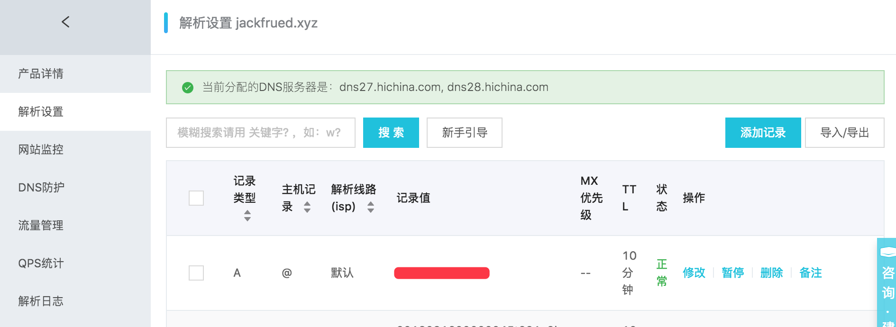

98.项目部署上线和性能调优
项目部署上线指南
准备上线
- 上线前的检查工作。
| Bash |
|---|
| python manage.py check --deploy
|
- 将DEBUG设置为False并配置ALLOWED_HOSTS。
| Python |
|---|
| DEBUG = False
ALLOWED_HOSTS = ['*']
|
- 安全相关的配置。
| Python |
|---|
| # 保持HTTPS连接的时间
SECURE_HSTS_SECONDS = 3600
SECURE_HSTS_INCLUDE_SUBDOMAINS = True
SECURE_HSTS_PRELOAD = True
# 自动重定向到安全连接
SECURE_SSL_REDIRECT = True
# 避免浏览器自作聪明推断内容类型
SECURE_CONTENT_TYPE_NOSNIFF = True
# 避免跨站脚本攻击
SECURE_BROWSER_XSS_FILTER = True
# COOKIE只能通过HTTPS进行传输
SESSION_COOKIE_SECURE = True
CSRF_COOKIE_SECURE = True
# 防止点击劫持攻击手段 - 修改HTTP协议响应头
# 当前网站是不允许使用<iframe>标签进行加载的
X_FRAME_OPTIONS = 'DENY'
|
- 敏感信息放到环境变量或文件中。
| Python |
|---|
| SECRET_KEY = os.environ['SECRET_KEY']
DB_USER = os.environ['DB_USER']
DB_PASS = os.environ['DB_PASS']
REDIS_AUTH = os.environ['REDIS_AUTH']
|
更新服务器Python环境到3.x
说明：如果需要清除之前的安装，就删除对应的文件和文件夹即可
- 安装底层依赖库。
| Bash |
|---|
| yum -y install zlib-devel bzip2-devel openssl-devel ncurses-devel sqlite-devel readline-devel tk-devel gdbm-devel libdb4-devel libpcap-devel xz-devel libffi-devel libxml2
|
- 下载Python源代码。
| Bash |
|---|
| wget https://www.python.org/ftp/python/3.7.6/Python-3.7.6.tar.xz
|
- 验证下载文件。
| Bash |
|---|
| md5sum Python-3.7.6.tar.xz
|
- 解压缩和解归档。
| Bash |
|---|
| xz -d Python-3.7.6.tar.xz
tar -xvf Python-3.7.6.tar
|
- 执行安装前的配置（生成Makefile文件）。
| Bash |
|---|
| cd Python-3.7.6
./configure --prefix=/usr/local/python37 --enable-optimizations
|
- 构建和安装。
- 配置PATH环境变量（用户或系统环境变量）并激活。
| Bash |
|---|
| vim ~/.bash_profile
vim /etc/profile
|
| INI |
|---|
| ... 此处省略上面的代码...
export PATH=$PATH:/usr/local/python37/bin
... 此处省略下面的代码...
|
source ~/.bash_profile
source /etc/profile
```
- 注册软链接（符号链接）- 这一步不是必须的，但通常会比较有用。
| Bash |
|---|
| ln -s /usr/local/python37/bin/python3 /usr/bin/python3
|
- 测试Python环境是否更新成功（安装Python 3一定不能破坏原来的Python 2）。
| Bash |
|---|
| python3 --version
python --version
|
项目目录结构
假设项目文件夹为project，下面的五个子目录分别是：code、conf、logs、stat和venv分别用来保存项目的代码、配置文件、日志文件、静态资源和虚拟环境。其中，conf目录下的子目录cert中保存了配置HTTPS需要使用的证书和密钥；code目录下的项目代码可以通过版本控制工具从代码仓库中检出；虚拟环境可以通过工具（如：venv、virtualenv、pyenv等）进行创建。
| Text Only |
|---|
| project
├── code
│ └── fangtx
│ ├── api
│ ├── common
│ ├── fangtx
│ ├── forum
│ ├── rent
│ ├── user
│ ├── manage.py
│ ├── README.md
│ ├── static
│ └── templates
├── conf
│ ├── cert
│ │ ├── 214915882850706.key
│ │ └── 214915882850706.pem
│ ├── nginx.conf
│ └── uwsgi.ini
├── logs
│ ├── access.log
│ ├── error.log
│ └── uwsgi.log
├── stat
│ └── css
│ └── images
│ └── js
└── venv
├── bin
│ ├── activate
│ ├── activate.csh
│ ├── activate.fish
│ ├── celery
│ ├── celerybeat
│ ├── celeryd
│ ├── celeryd-multi
│ ├── coverage
│ ├── coverage3
│ ├── coverage-3.7
│ ├── django-admin
│ ├── django-admin.py
│ ├── easy_install
│ ├── easy_install-3.7
│ ├── pip
│ ├── pip3
│ ├── pip3.7
│ ├── __pycache__
│ ├── pyrsa-decrypt
│ ├── pyrsa-decrypt-bigfile
│ ├── pyrsa-encrypt
│ ├── pyrsa-encrypt-bigfile
│ ├── pyrsa-keygen
│ ├── pyrsa-priv2pub
│ ├── pyrsa-sign
│ ├── pyrsa-verify
│ ├── python -> python3
│ ├── python3 -> /usr/bin/python3
│ └── uwsgi
├── include
├── lib
│ └── python3.7
├── lib64 -> lib
├── pip-selfcheck.json
└── pyvenv.cfg
|
下面以阿里云为例，简单说明如何为项目注册域名、解析域名以及购买权威机构颁发的证书。
- 注册域名。

- 域名备案。

- 域名解析。


- 购买证书。

可以使用类似于sftp的工具将证书上传到conf/cert目录，然后使用git克隆项目代码到code目录。
回到项目目录，创建并激活虚拟环境。
| Bash |
|---|
| python3 -m venv venv
source venv/bin/activate
|
重建项目依赖项。
| Bash |
|---|
| pip install -r code/teamproject/requirements.txt
|
uWSGI的配置
- 安装uWSGI。
- 修改uWSGI的配置文件（
/root/project/conf/uwsgi.ini）。
| INI |
|---|
| [uwsgi]
# 配置前导路径
base=/root/project
# 配置项目名称
name=teamproject
# 守护进程
master=true
# 进程个数
processes=4
# 虚拟环境
pythonhome=%(base)/venv
# 项目地址
chdir=%(base)/code/%(name)
# 指定python解释器
pythonpath=%(pythonhome)/bin/python
# 指定uwsgi文件
module=%(name).wsgi
# 通信的地址和端口(自己服务器的IP地址和端口)
socket=172.18.61.250:8000
# 日志文件地址
logto=%(base)/logs/uwsgi.log
|
说明：可以先将“通信的地址和端口”项等号前面改为http来进行测试，如果没有问题再改回 成socket，然后通过Nginx来实现项目的“动静分离”（静态资源交给Nginx处理，动态内容交给 uWSGI处理）。按照下面的方式可以启动uWSGI服务器。
- 启动服务器。
| Bash |
|---|
| nohup uwsgi --ini conf/uwsgi.ini &
|
Nginx的配置
-
安装Nginx。
-
修改全局配置文件（/etc/nginx/nginx.conf）。
| Nginx Configuration File |
|---|
| # 配置用户
user nginx;
# 工作进程数(建议跟CPU的核数量一致)
worker_processes auto;
# 错误日志
error_log /var/log/nginx/error.log;
# 进程文件
pid /run/nginx.pid;
# 包含其他的配置
include /usr/share/nginx/modules/*.conf;
# 工作模式(多路IO复用方式)和连接上限
events {
use epoll;
worker_connections 1024;
}
# HTTP服务器相关配置
http {
# 日志格式
log_format main '$remote_addr - $remote_user [$time_local] "$request" '
'$status $body_bytes_sent "$http_referer" '
'"$http_user_agent" "$http_x_forwarded_for"';
# 访问日志
access_log /var/log/nginx/access.log main;
# 开启高效文件传输模式
sendfile on;
# 用sendfile传输文件时有利于改善性能
tcp_nopush on;
# 禁用Nagle来解决交互性问题
tcp_nodelay on;
# 客户端保持连接时间
keepalive_timeout 30;
types_hash_max_size 2048;
# 包含MIME类型的配置
include /etc/nginx/mime.types;
# 默认使用二进制流格式
default_type application/octet-stream;
# 包含其他配置文件
include /etc/nginx/conf.d/*.conf;
# 包含项目的Nginx配置文件
include /root/project/conf/*.conf;
}
|
-
编辑局部配置文件（/root/project/conf/nginx.conf）。
| Nginx Configuration File |
|---|
| server {
listen 80;
server_name _;
access_log /root/project/logs/access.log;
error_log /root/project/logs/error.log;
location / {
include uwsgi_params;
uwsgi_pass 172.18.61.250:8000;
}
location /static/ {
alias /root/project/stat/;
expires 30d;
}
}
server {
listen 443;
server_name _;
ssl on;
access_log /root/project/logs/access.log;
error_log /root/project/logs/error.log;
ssl_certificate /root/project/conf/cert/214915882850706.pem;
ssl_certificate_key /root/project/conf/cert/214915882850706.key;
ssl_session_timeout 5m;
ssl_ciphers ECDHE-RSA-AES128-GCM-SHA256:ECDHE:ECDH:AES:HIGH:!NULL:!aNULL:!MD5:!ADH:!RC4;
ssl_protocols TLSv1 TLSv1.1 TLSv1.2;
ssl_prefer_server_ciphers on;
location / {
include uwsgi_params;
uwsgi_pass 172.18.61.250:8000;
}
location /static/ {
alias /root/project/static/;
expires 30d;
}
}
|
到此为止，我们可以启动Nginx来访问我们的应用程序，HTTP和HTTPS都是没有问题的，如果Nginx已经运行，在修改配置文件后，我们可以用下面的命令重新启动Nginx。
-
重启Nginx服务器。
或
说明：可以对Django项目使用python manage.py collectstatic命令将静态资源收集到指定目录下，要做到这点只需要在项目的配置文件settings.py中添加STATIC_ROOT配置即可。
负载均衡配置
下面的配置中我们使用Nginx实现负载均衡，为另外的三个Nginx服务器（通过Docker创建）提供反向代理服务。
| Bash |
|---|
| docker run -d -p 801:80 --name nginx1 nginx:latest
docker run -d -p 802:80 --name nginx2 nginx:latest
docker run -d -p 803:80 --name nginx3 nginx:latest
|
| Nginx Configuration File |
|---|
| user root;
worker_processes auto;
error_log /var/log/nginx/error.log;
pid /run/nginx.pid;
include /usr/share/nginx/modules/*.conf;
events {
worker_connections 1024;
}
# 为HTTP服务配置负载均衡
http {
upstream xx {
server 192.168.1.100 weight=2;
server 192.168.1.101 weight=1;
server 192.168.1.102 weight=1;
}
server {
listen 80 default_server;
listen [::]:80 default_server;
listen 443 ssl;
listen [::]:443 ssl;
ssl on;
access_log /root/project/logs/access.log;
error_log /root/project/logs/error.log;
ssl_certificate /root/project/conf/cert/214915882850706.pem;
ssl_certificate_key /root/project/conf/cert/214915882850706.key;
ssl_session_timeout 5m;
ssl_ciphers ECDHE-RSA-AES128-GCM-SHA256:ECDHE:ECDH:AES:HIGH:!NULL:!aNULL:!MD5:!ADH:!RC4;
ssl_protocols TLSv1 TLSv1.1 TLSv1.2;
ssl_prefer_server_ciphers on;
location / {
proxy_set_header Host $host;
proxy_set_header X-Forwarded-For $remote_addr;
# proxy_set_header X-Real-IP $remote_addr;
# proxy_set_header X-Forwarded-For $proxy_add_x_forwarded_for;
proxy_buffering off;
proxy_pass http://fangtx;
}
}
}
|
说明：Nginx在配置负载均衡时，默认使用WRR（加权轮询算法），除此之外还支持ip_hash、fair（需要安装upstream_fair模块）和url_hash算法。此外，在配置upstream模块时可以指定服务器的状态值，包括：backup（备份机器，其他服务器不可用时才将请求分配到该机器）、down、fail_timeout（请求失败达到max_fails后的暂停服务时间）、max_fails（允许请求失败的次数）和weight（轮询的权重）。
Keepalived
当使用Nginx进行负载均衡配置时，要考虑负载均衡服务器宕机的情况。为此可以使用Keepalived来实现负载均衡主机和备机的热切换，从而保证系统的高可用性。Keepalived的配置还是比较复杂，通常由专门做运维的人进行配置，一个基本的配置可以参照《Keepalived的配置和使用》。
MySQL主从复制
下面还是基于Docker来演示如何配置MySQL主从复制。我们事先准备好MySQL的配置文件以及保存MySQL数据和运行日志的目录，然后通过Docker的数据卷映射来指定容器的配置、数据和日志文件的位置。
| Bash |
|---|
| root
└── mysql
├── master
│ ├── conf
| └── data
└── slave-1
| ├── conf
| └── data
└── slave-2
| ├── conf
| └── data
└── slave-3
├── conf
└── data
|
-
MySQL的配置文件（master和slave的配置文件需要不同的server-id）。
| Text Only |
|---|
| [mysqld]
pid-file=/var/run/mysqld/mysqld.pid
socket=/var/run/mysqld/mysqld.sock
datadir=/var/lib/mysql
log-error=/var/log/mysql/error.log
server-id=1
log-bin=/var/log/mysql/mysql-bin.log
expire_logs_days=30
max_binlog_size=256M
symbolic-links=0
# slow_query_log=ON
# slow_query_log_file=/var/log/mysql/slow.log
# long_query_time=1
|
-
创建和配置master。
| Bash |
|---|
| docker run -d -p 3306:3306 --name mysql-master \
-v /root/mysql/master/conf:/etc/mysql/mysql.conf.d \
-v /root/mysql/master/data:/var/lib/mysql \
-e MYSQL_ROOT_PASSWORD=123456 mysql:5.7
docker exec -it mysql-master /bin/bash
|
| Bash |
|---|
| mysql -u root -p
Enter password:
Welcome to the MySQL monitor. Commands end with ; or \g.
Your MySQL connection id is 1
Server version: 5.7.23-log MySQL Community Server (GPL)
Copyright (c) 2000, 2018, Oracle and/or its affiliates. All rights reserved.
Oracle is a registered trademark of Oracle Corporation and/or its
affiliates. Other names may be trademarks of their respective
owners.
Type 'help;' or '\h' for help. Type '\c' to clear the current input statement.
mysql> grant replication slave on *.* to 'slave'@'%' identified by 'iamslave';
Query OK, 0 rows affected, 1 warning (0.00 sec)
mysql> flush privileges;
Query OK, 0 rows affected (0.00 sec)
mysql> show master status;
+------------------+----------+--------------+------------------+-------------------+
| File | Position | Binlog_Do_DB | Binlog_Ignore_DB | Executed_Gtid_Set |
+------------------+----------+--------------+------------------+-------------------+
| mysql-bin.000003 | 590 | | | |
+------------------+----------+--------------+------------------+-------------------+
1 row in set (0.00 sec)
mysql> quit
Bye
exit
|
上面创建Docker容器时使用的-v参数（--volume）表示映射数据卷，冒号前是宿主机的目录，冒号后是容器中的目录，这样相当于将宿主机中的目录挂载到了容器中。
- 备份主表中的数据（如果需要的话）。
| SQL |
|---|
| mysql> flush table with read lock;
|
| Bash |
|---|
| mysqldump -u root -p 123456 -A -B > /root/backup/mysql/mybak$(date +"%Y%m%d%H%M%S").sql
|
- 创建和配置slave。
| Bash |
|---|
| docker run -d -p 3308:3306 --name mysql-slave-1 \
-v /root/mysql/slave-1/conf:/etc/mysql/mysql.conf.d \
-v /root/mysql/slave-1/data:/var/lib/mysql \
-e MYSQL_ROOT_PASSWORD=123456 \
--link mysql-master:mysql-master mysql:5.7
docker run -d -p 3309:3306 --name mysql-slave-2 \
-v /root/mysql/slave-2/conf:/etc/mysql/mysql.conf.d \
-v /root/mysql/slave-2/data:/var/lib/mysql \
-e MYSQL_ROOT_PASSWORD=123456 \
--link mysql-master:mysql-master mysql:5.7
docker run -d -p 3310:3306 --name mysql-slave-3 \
-v /root/mysql/slave-3/conf:/etc/mysql/mysql.conf.d \
-v /root/mysql/slave-3/data:/var/lib/mysql \
-e MYSQL_ROOT_PASSWORD=123456 \
--link mysql-master:mysql-master mysql:5.7
docker exec -it mysql-slave-1 /bin/bash
|
| Bash |
|---|
| mysql -u root -p
Enter password:
Welcome to the MySQL monitor. Commands end with ; or \g.
Your MySQL connection id is 2
Server version: 5.7.23-log MySQL Community Server (GPL)
Copyright (c) 2000, 2018, Oracle and/or its affiliates. All rights reserved.
Oracle is a registered trademark of Oracle Corporation and/or its
affiliates. Other names may be trademarks of their respective
owners.
Type 'help;' or '\h' for help. Type '\c' to clear the current input statement.
mysql> reset slave;
Query OK, 0 rows affected (0.02 sec)
mysql> change master to master_host='mysql-master', master_user='slave', master_password='iamslave', master_log_file='mysql-bin.000003', master_log_pos=590;
Query OK, 0 rows affected, 2 warnings (0.03 sec)
mysql> start slave;
Query OK, 0 rows affected (0.01 sec)
mysql> show slave status\G
*************************** 1. row ***************************
Slave_IO_State: Waiting for master to send event
Master_Host: mysql57
Master_User: slave
Master_Port: 3306
Connect_Retry: 60
Master_Log_File: mysql-bin.000001
Read_Master_Log_Pos: 590
Relay_Log_File: f352f05eb9d0-relay-bin.000002
Relay_Log_Pos: 320
Relay_Master_Log_File: mysql-bin.000001
Slave_IO_Running: Yes
Slave_SQL_Running: Yes
Replicate_Do_DB:
Replicate_Ignore_DB:
Replicate_Do_Table:
Replicate_Ignore_Table:
Replicate_Wild_Do_Table:
Replicate_Wild_Ignore_Table:
Last_Errno: 0
Last_Error:
Skip_Counter: 0
Exec_Master_Log_Pos: 590
Relay_Log_Space: 534
Until_Condition: None
Until_Log_File:
Until_Log_Pos: 0
Master_SSL_Allowed: No
Master_SSL_CA_File:
Master_SSL_CA_Path:
Master_SSL_Cert:
Master_SSL_Cipher:
Master_SSL_Key:
Seconds_Behind_Master: 0
Master_SSL_Verify_Server_Cert: No
Last_IO_Errno: 0
Last_IO_Error:
Last_SQL_Errno: 0
Last_SQL_Error:
Replicate_Ignore_Server_Ids:
Master_Server_Id: 1
Master_UUID: 30c38043-ada1-11e8-8fa1-0242ac110002
Master_Info_File: /var/lib/mysql/master.info
SQL_Delay: 0
SQL_Remaining_Delay: NULL
Slave_SQL_Running_State: Slave has read all relay log; waiting for more updates
Master_Retry_Count: 86400
Master_Bind:
Last_IO_Error_Timestamp:
Last_SQL_Error_Timestamp:
Master_SSL_Crl:
Master_SSL_Crlpath:
Retrieved_Gtid_Set:
Executed_Gtid_Set:
Auto_Position: 0
Replicate_Rewrite_DB:
Channel_Name:
Master_TLS_Version:
1 row in set (0.00 sec)
mysql> quit
Bye
exit
|
接下来可以如法炮制配置出slave2和slave3，这样就可以搭建起一个“一主带三从”的主从复制环境。上面创建创建容器时使用的--link参数用来配置容器在网络上的主机名（网络地址别名）。
配置好主从复制后，写数据的操作应该master上执行，而读数据的操作应该在slave上完成。为此，在Django项目中需要配置DATABASE_ROUTERS并通过自定义的主从复制路由类来实现读写分离操作，如下所示：
| Python |
|---|
| DATABASE_ROUTERS = [
# 此处省略其他配置
'common.routers.MasterSlaveRouter',
]
|
| Python |
|---|
| class MasterSlaveRouter(object):
"""主从复制路由"""
@staticmethod
def db_for_read(model, **hints):
"""
Attempts to read auth models go to auth_db.
"""
return random.choice(('slave1', 'slave2', 'slave3'))
@staticmethod
def db_for_write(model, **hints):
"""
Attempts to write auth models go to auth_db.
"""
return 'default'
@staticmethod
def allow_relation(obj1, obj2, **hints):
"""
Allow relations if a model in the auth app is involved.
"""
return None
@staticmethod
def allow_migrate(db, app_label, model_name=None, **hints):
"""
Make sure the auth app only appears in the 'auth_db'
database.
"""
return True
|
上面的内容参考了Django官方文档的DATABASE_ROUTERS配置，对代码进行了适当的调整。
Docker
事实上，项目上线中最为麻烦的事情就是配置软件运行环境，环境的差异会给软件的安装和部署带来诸多的麻烦，而Docker正好可以解决这个问题。关于Docker在之前的文档中我们已经介绍过了，接下来我们对Docker的知识做一些必要的补充。
- 创建镜像文件。
将容器保存成镜像：
| Bash |
|---|
| docker commit -m "..." -a "jackfrued" <container-name> jackfrued/<image-name>
|
使用Dockerfile构建镜像：
| Docker |
|---|
| # 指定基础镜像文件
FROM centos:latest
# 指定维护者信息
MAINTAINER jackfrued
# 执行命令
RUN yum -y install gcc
RUN cd ~
RUN mkdir -p project/code
RUN mkdir -p project/logs
# 拷贝文件
COPY ...
# 暴露端口
EXPOSE ...
# 在容器启动时执行命令
CMD ~/init.sh
|
| Bash |
|---|
| docker build -t jackfrued/<image-name> .
|
- 镜像的导入和导出。
| Bash |
|---|
| docker save -o <file-name>.tar <image-name>:<version>
docker load -i <file-name>.tar
|
- 推送到DockerHub服务器。
| Bash |
|---|
| docker tag <image-name>:<version> jackfrued/<name>
docker login
docker push jackfrued/<name>
|
- 容器之间的通信。
| Bash |
|---|
| docker run --link <container-name>:<alias-name>
|
如果我们能够在Docker中完成项目的部署，并且将整个部署好的容器打包成镜像文件进行分发和安装，这样就可以解决项目在多个节点上进行部署时可能遇到的麻烦，而且整个部署可以在很短的时间内完成。
Supervisor
Supervisor是一个用Python写的进程管理工具，可以很方便的用来在类Unix系统下启动、重启（自动重启程序）和关闭进程，目前Supervisor暂时还没有提供对Python 3的支持，可以通过Python 2来安装和运行Supervisor，再通过Supervisor来管理Python 3的程序。
提示：还有一个和Supervisor功能类似的工具名为Circus，支持Python 3。
- 安装Supervisor。
| Bash |
|---|
| virtualenv -p /usr/bin/python venv
source venv/bin/activate
pip install supervisor
|
-
查看Supervisor的配置文件。
| Bash |
|---|
| vim /etc/supervisord.conf
|
| INI |
|---|
| ; 此处省略上面的代码
; The [include] section can just contain the "files" setting. This
; setting can list multiple files (separated by whitespace or
; newlines). It can also contain wildcards. The filenames are
; interpreted as relative to this file. Included files *cannot*
; include files themselves.
[include]
files = supervisord.d/*.ini
|
可以看出自定义的管理配置代码可以放在/etc/supervisord.d目录中，并且文件名以ini作为后缀即可。
-
编写自己的配置文件fangtx.ini并放在/etc/supervisord.d目录中。
| INI |
|---|
| [program:project]
command=uwsgi --ini /root/project/conf/uwsgi.ini
stopsignal=QUIT
autostart=true
autorestart=true
redirect_stderr=true
[program:celery]
; Set full path to celery program if using virtualenv
command=/root/project/venv/bin/celery -A fangtx worker
user=root
numprocs=1
stdout_logfile=/var/log/supervisor/celery.log
stderr_logfile=/var/log/supervisor/celery_error.log
autostart=true
autorestart=true
startsecs=10
; Need to wait for currently executing tasks to finish at shutdown.
; Increase this if you have very long running tasks.
;stopwaitsecs = 600
; When resorting to send SIGKILL to the program to terminate it
; send SIGKILL to its whole process group instead,
; taking care of its children as well.
killasgroup=true
; Set Celery priority higher than default (999)
; so, if rabbitmq is supervised, it will start first.
priority=1000
|
- 启动Supervisor。
| Bash |
|---|
| supervisorctl -c /etc/supervisord.conf
|
其他服务
- 常用开源软件。
| 功能 |
开源方案 |
| 版本控制工具 |
Git、Mercurial、SVN |
| 缺陷管理 |
Redmine、Mantis |
| 负载均衡 |
Nginx、LVS、HAProxy |
| 邮件服务 |
Postfix、Sendmail |
| HTTP服务 |
Nginx、Apache |
| 消息队列 |
RabbitMQ、ZeroMQ、Redis、Kafka |
| 文件系统 |
FastDFS |
| 基于位置服务（LBS） |
MongoDB、Redis |
| 监控服务 |
Nagios、Zabbix |
| 关系型数据库 |
MySQL、PostgreSQL |
| 非关系型数据库 |
MongoDB、Redis、Cassandra、TiDB |
| 搜索引擎 |
ElasticSearch、Solr |
| 缓存服务 |
Mamcached、Redis |
- 常用云服务。
| 功能 |
可用的云服务 |
| 团队协作工具 |
Teambition、钉钉 |
| 代码托管平台 |
Github、Gitee、CODING |
| 邮件服务 |
SendCloud |
| 云存储（CDN） |
七牛、OSS、LeanCloud、Bmob、又拍云、S3 |
| 移动端推送 |
极光、友盟、百度 |
| 即时通信 |
环信、融云 |
| 短信服务 |
云片、极光、Luosimao、又拍云 |
| 第三方登录 |
友盟、ShareSDK |
| 网站监控和统计 |
阿里云监控、监控宝、百度云观测、小鸟云 |